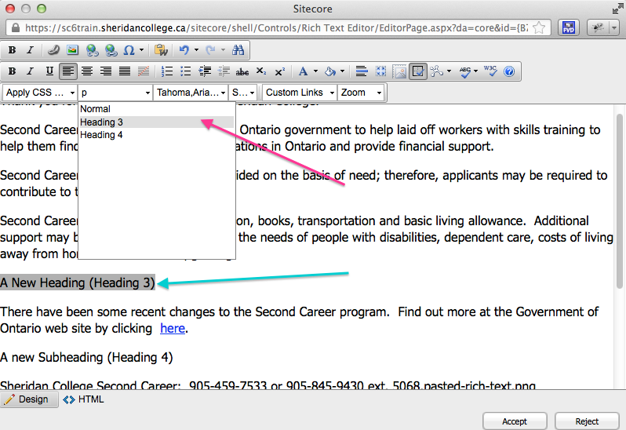
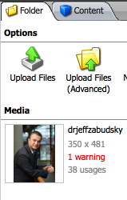

SiteCore 6 Training Manual
Choosing a Web Browser
For Windows users, the SiteCore Content Management System (CMS) recommends using Internet Explorer 8. If you are running an older version of Internet Explorer, please update to Internet Explorer 8 or 9. You can check your version of Internet Explorer in the Help > About menu. If you do not see a toolbar, press Alt to display it. To update Internet Explorer, click here.
If you are on Mac, use the most recent version of either Safari or Firefox. To update Firefox, click here. If Safari is outdated, it can be updated by running Software Update on your Mac. You may experience timeouts with Google Chrome on a slow server.
Login and Edit Content
To login to SiteCore, visit sccms.sheridaninstitute.ca/sitecore/login/ or sccms.sheridancollege.ca/sitecore/login.
By default, the Options tab may be collapsed. Click on “Options” to expand the options and select your login method, be it Desktop, Content Editor or Page Editor.
- Enter your login credentials
- Click Options to expand the User Interface menu
- Choose which mode you would like to use (Desktop, Content Editor or Page Editor)
- Click Login to load the desired editor

You may already be familiar with the Content Editor and Desktop options. New in version 6 is the Page Editor view. Page Editor mode allows you to edit the site while browsing. It is similar to and replaces the Web Edit option.
Once you login to SiteCore Page Editor, you can navigate to the page you want to edit to edit it. Once you are at the page, click on Edit to Check-Out and lock the item. This will lock the page and only you can edit it until you check it in again. This is similar to checking out a library book where only one person can check it out at a time.

Once checked out, you can click on the editable content areas to edit the page. Not all areas of the page are editable, and often you can only edit blocks of text and image references, not their layout and arrangement. Hovering your mouse around the page will indicate which content blocks are editable by highlighting these areas with a dotted outline.
Quick Overview
Please see the video 01 - Login and Edit (1 min 34 sec) for a quick demonstration on navigating to a page and editing the content in Page Editor mode.
Editing a Page
Click Edit to Check-Out the page to make sure that no one else can modify the file while you are working on it.
Typing
To edit text, simply click in an editable area and begin typing. Click Save when you are done.
Copying and Pasting: Removing Text Formatting
Copying and pasting text from a rich-text source like Microsoft Word, an email, or a website may negatively affect the default Sheridan website layout.
To paste text without affecting the default text layout, use the Paste without Formatting button in the rich text editor.

If you are in Page Editor mode, the floating palette you will see has less options. You will need to use the rich text editor pop-up by clicking the Document icon (the first icon on the left).

Creating Sections of a Page using Headings
If you need to create headings/subtitles, select the text you want to change and apply a header style from the paragraph style dropdown menu. You can use Heading 2, 3 or 4. The default style is "Normal" and "p" and should be used for all body text.
Uneditable Text
In Page Editor mode, you may come across a content block that you cannot edit. It may be that:
- the text is hard-coded into the site design and cannot be changed through the CMS
- it is fed in from a related item

On the Admissions page, for example, you will not be able to edit some of these items by clicking on them. In the case of the Admissions sub-navigation, the links are called “related items.” They are the title of the page they link to. SiteCore lets you know that you’re editing a related item.
Clicking on either the title, image or links of a content block section (e.g. Visit Sheridan, Apply to Sheridan, etc.) will allow you to edit that related item. You will need to click on the title, an image or a link to bring up the editing palette.
Once you have clicked to edit the related item, you will see the information shown in the next image. You will initially see a split-pane view with the site content below the content editor.

In the above example, the title has been changed from “Visit Sheridan” to say “Discover Sheridan.” The content has been edited to include the word “EDITED” at the end. I have added exclamation marks to all of the reference links.
If this item is to show up in the right sidebar column, check the box.
If you need more options than the Page Editor provides, you can do one of the following:
- Click the Document icon in the floating palette in the Page Editor to load the rich text editor in a pop-up window (first image below)
- Click the View tab and check off the Navigation Bar box to display the navigation bar. This used to be called the Breadcrumb but has been renamed to Navigation Bar in this version of SiteCore.
- Click Edit to be taken to the full Content Editor (second image below)

Creating Links: Linking to Files and Pages
Internal Links
Linking throughout the Sheridan site can be done through the Page Editor. Simply select some text and click the “Insert Link” button on the floating palette.

The link button in the floating palette will allow you to link internally to the site.
External, Anchor and E-mail links
If you want to provide a link to an external website address, an anchor link to a separate part of the page, or an email address link, you will need to click the “Edit the text” button, which is the first button, to be brought to the rich text editor.
From there, click the link button with a globe on it to open the hyperlink manager.

From the hyperlink manager, you will be able to include external website links, anchor links to separate parts of the page, and links to email addresses, which, depending on the user’s computer settings, will launch their default email client.
Properly creating links is important. All external links must be preceded by “http://” and all email links must be preceded in their code by “mailto:” in order to function properly. Improperly creating links can cause “404 Page Not Found” (broken link) errors. Using the hyperlink manager will automatically properly create these links for you so it is important that you use it create the type of link you want.
Uploading Files to the Media Library
Files will need to be added to the Media Library before uploading them. The Media Library can be accessed through the bottom toolbar in the Content Editor or through the menu accessible using the blue arrow at the top right corner of the page.
Navigate to the folder you want to upload files to then click “Upload Files.” You can upload images, PDF, Word documents and Flash files (SWF).
If you do not see the left sidebar section as in the image above—the Content Tree—enable it by clicking the View tab in the top toolbar then checking off the box for Content Tree.

Navigate to the folder/directory you want to upload the file to then click “Upload Files.” Choose the files you want to upload.
Uploading Multiple Files
You can upload more than one file at a time by holding different buttons on your keyboard and clicking on the files with your mouse.
To select a range of files, click the first file in the range of files, press Shift, and then select the last file in the range. This will select all the files between the first file clicked and the last file clicked.


To select multiple files that are not in a range, click on the first file, then press Control (Ctrl, Windows) or Command (Cmd, Mac) and click all the files after that that you want to include while holding Control or Command.
These are operating system-wide shortcuts that work in all instances of Windows Explorer and Mac Finder.
Image Information in SiteCore
Once you upload an image, you will be taken to a screen where you can specify its attributes.
You will see the image width and height. Changing this will disrupt the original aspect ratio of the image. It is advised not to touch this setting. Should you decide to change this anyway, doing so simply scales the image. It does not change the size of the file. If you have large images that you want to shrink, it is best to do this by using image editing software. See the section Editing Images for SiteCore for instructions on doing that.
The “Alt” (alternate) text is used for screen readers and if the user has images disabled on their computer or device. It is good practice to write a description of the image in this field even though it is not seen.

You do not need to modify any other image attributes.
If you wish to change the file name, right click on the file and click Rename.
If you go to the folder where the images are that you uploaded, you can see any warnings that need to be addressed. Alt text is highly recommended. The image in the figure below does not have alt text specified so there is a warning.
Changing Images in Page Editor Mode
Some images can be changed/re-referenced but some cannot. Click on the image, then the image icon to change the source image. A box will pop up allowing you to upload an image from your computer or choose from one of your uploaded files.

It is recommended that you do not use SiteCore for image editing (cropping, resizing, etc.) and that you instead use photo editing software like Photoshop. See the section Editing Images for SiteCore for instructions on doing that.
Saving and Submitting Your Changes
Workboxes and Workflows
- Workbox: Documents you have privileges to edit will be available in your Workbox.
- Workflow: A workflow is the process a document follows in order to be published.
Once you have made your changes, you will need to save them and Submit them to a moderator. This will move the document up in the workflow.
Click Check-In once you are done editing it to unlock it from your editing privilege so that others may edit it if need be.

To view your Workbox while in Page Editor mode, click on the Home tab and then click Workbox. The top menu bar may be collapsed and you may not see the buttons below. Click on it to expand it and see the options.

To view your Workbox in Content Editor view, click on the blue arrow in the top right corner of the screen, or click on Workbox in the bottom toolbar.
Moderator Privileges
If you are a moderator, you will have the ability to approve the editing and creation of pages in your workflow. (See figure 16) If set in your notification email settings (default), you should receive an email notification when a post is ready to be addressed.
A moderator can:
-
approve a document
- publish it (if given this privilege)
- submit it to a higher level moderator (if he or she does not have full privileges)
-
reject a document
- send it back for the user to make changes and resubmit
- make changes to the document and either publish or submit it (see above)

If you are at the highest moderation level, you can mark an item in your workflow for publishing. SiteCore publishes items ready for publishing at 12pm and 5pm every day.

Versions
SiteCore tracks changes to pages under the “Versions” tab.
If you are an administrator, you can revert back to, delete or hide a previous version.
From here you can remove/delete a version of the page. You can also compare versions and see the changes between the two. Changed sections are marked in red.
If you only want to unpublish/hide a version but not delete it, go to the Publish tab and click on Change. A window will pop-up allowing you to uncheck versions of the page to unpublish it.

You can also use this section to have a version only published for a certain amount of time. For example, if you have a 1-week special event happening in a month, you can create the content now, set it to be published at a later date, and have that version expire after the event is over.
Changing Your Password
If you wish to change your password, you can do so before logging in. Click “Change Password” on the login screen, which can be accessed at sccms.sheridaninstitute.ca/sitecore/login/.

To change your password, you’ll need to know your current password. Fill in the form and press Enter or click the Change Password button.
To recover your password, you’ll need to know your username. Enter it and you will receive an email to recover your password.

About the Content Tree
You may find it useful to view all the pages and files in a hierarchical tree-like structure as if you were browsing files in Windows Explorer on your Windows computer (or Finder’s list and column views on Mac). In the Content Editor, click on the View tab and check the box for “Content Tree” and the site tree/map will show up in a left-hand sidebar.

Searching for Content
You can search SiteCore’s Content Editor to find the page you are looking to edit. To search, click the “Navigate” tab then the “Search” button.

Editing Images for SiteCore
SiteCore comes with some image editing capabilities but it is recommended that you do not use them as they can be somewhat buggy. You may already have the Adobe Creative Suite installed on your computer. It is recommended that you use Photoshop or a free equivalent like GIMP or the online FotoFlexer.
Cropping and Resizing Images in Photoshop
Manually crop your images with Photoshop’s crop tool or specify a crop width and height.
Resize your images without cropping: Go into Image > Image Size, or simply press Cmd+Alt+I (Mac) or Ctrl+Alt+I (Windows).

Make sure the “Constrain proportions” box is checked off. A chainlink will show up to show that width and height are now linked. The image will skew and maintain the aspect ratio.
Optimizing Images for Web
This step isn't absolutely necessary but it reduces the file size so that the page loads faster.
Once you are happy with your image and you are ready to upload it, it’s time to save it in a web-friendly format. Go into File and click on “Save for Web & Devices.” You can opt for a high-quality JPEG (for photographs and most graphics) or PNG-24 (for graphics with transparency).

When saving for web and devices, you will be given the option as to which format you would like to use. If you are using photographs, a high quality JPEG will suffice. PNG-24 are ideal for high quality graphics, especially if they require transparency support. PNG are somewhat larger in file size than JPEG and therefore take slightly longer to load. Most of the time, JPEG will work just fine. Choose your preferred format (JPEG vs. PNG), leave the default settings and press Save.
Advanced Tips
Below are some advanced tips that power users may find useful. This section is supplementary reading for those who would like to make the most out of SiteCore.
Closing and Reopening the Page Editor for faster browsing
Navigating to different portions of the site using the Page Editor can be slow depending on the speed of the server or your connection. You can close the Page Editor by clicking the Close button.
Once you have navigated to the page you want to edit, you will notice you are no longer in the Page Editor. To get to the Page Editor again, simply add the following text to the end of the URL in the address bar of your browser and hit Enter/Return (see figure 30). You must be logged in for this to work.
?sc_mode=edit

Once you reload the page with the aforementioned URL suffix, Page Editor will be enabled on this page and you will be able to modify its editable content blocks.
Remembering this little snippet of text will allow you to painlessly navigate the site and load the Page Editor only when needed, provided that you are logged in.
Further Reading
If you would like to learn more about SiteCore, you can visit any of the websites below: